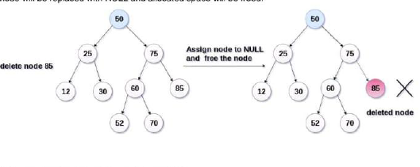
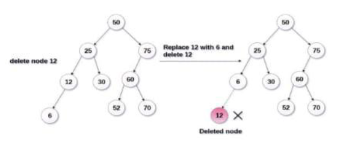
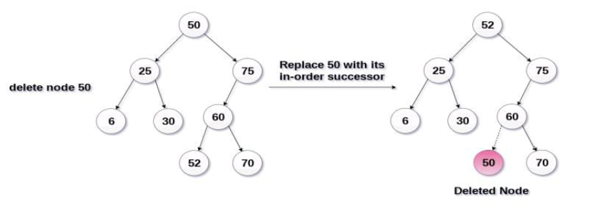

Binary Search Tree Deletion:
1. Delete the Function is used to delete the specified node from a binary search tree
2. First we have to check with deleted node with root node if it is less than root node then we have to check left side of the
tree if node to be deleted is greater than parent node we have to check right side of the tree
3.There are three situations of deleting a node from a binary search tree
1.Node to be deleted is leaf node
It is the simplest case , in this case,replace the leaf node with the NULL and simple free the allocated space
In the image we are deleting the node 85 since the node is a leaf node therefore the node will be replaced with NULL and allocated space will be freed

2.The node to be deleted has only one child
In this case replace the node with its child and delete the child node which now contaims the value which is to be deleted.Simply replace it with the NULL and free the allocated space .
In the following image the node 12 is to be deleted it has only one child.The node will be replaced with its child node and the replaced node 12(which is now leaf node)will simply be deleted.

3. Node to be deleted has two childrens
Node which has to deleted has two children then we can replace that node with
a. In order predecessor
b. In order successor

In the following image the node 50 is to be deleted which is the root node of the tree
The in order traversal of the given tree below
6,25,30,50,52,60,70,75
replace 50 with in its order successor 52.Now 50 will be moved to the leaf of the tree which will be simply deleted